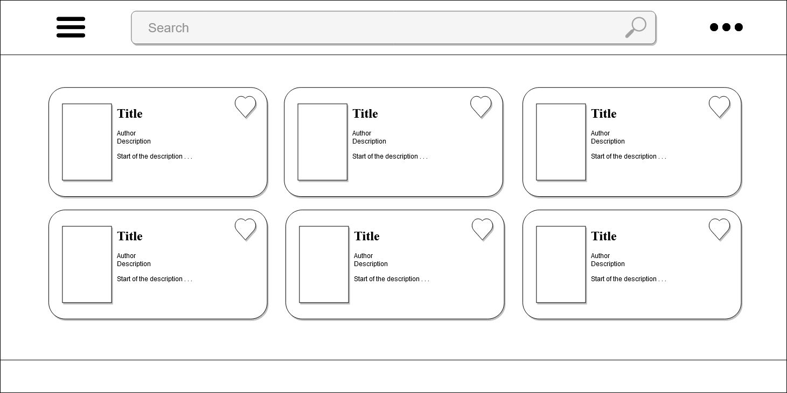
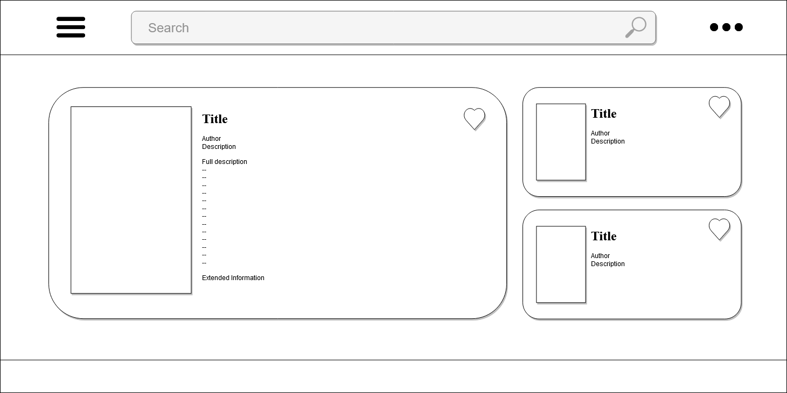

Project 2
Proposal
Project Description
I will be creating a book finding application that will run off of the Google Book API. My reasoning behind this is that the documentation behind making such a web application is very common, has been done a number of ways and has a guide that was created by Google to get a simple search done. The aspects that I will be adding on to that process include saving favorites to local storage, searching by author, publisher, isbn and with some luck, genre. Ideally this will only take four weeks in total and is possible but with the school/work load will prove challenging.
Purpose
The purpose of the application is to allow the user the ability to easily search the Google Book API for books that they may be interested in, be able to save any favorites and be able to go to the Google Bookstore to potentially read or purchase the book.
Audience
People who are looking for their next book that they wish to read. Which can be any person of any age, gender and/or ethnicity.
Data sources {External API, localStorage, local JSON file, etc}
The external API will be the Google Book API. There will be local storage involved that will allow the user to save a favorite books to a local profile that they can access at a later date from that same browser. Ideally the user will be able to access this saved list from a online profile but this portion of my project will not be using a server to store user information. Aside from those two things I am not 100% sure what else I would need other than maybe using Google Fonts.
Initial Module List
I am still unfamiliar with modules. I understand that they can be used to separate out tasks and can be used for things like processing information using a web worker So ideally I would have several modules to do different things.
- The modules that I believe I will need are as follows:
- fetchAPI
- searchAPI
- saveLocal
- main.js
Wireframes for each view of your application

Colors/Typography/specific Element Styling
When it comes to styling the site I will be using light blues and grey for a more cool and light atmosphere. I plan on using a Google Font but am not sure what font I will be using as of this moment. I will need to flip through some of the free ones. As far as other styling I will be using SCSS to setup everything including media sizes so that this web app can be used on mobile devices.
Schedule
Milestone 1
Build the framework design such as the different pages, the CSS, choose a font and create the connection script to connect to the API.
Milestone 2
Work on retrieving the information from the Google Books API and displaying information. Also create the local storage profile so that the information can be saved. Create the search function and get it working at a minimum with finding the book name.
Milestone 3
Work on the search method so that the user can actually search by author, publisher, both ISBN numbers and genre.
Milestone 4
Finalize everything in the application and work out any kinks that may have been hit while in production.